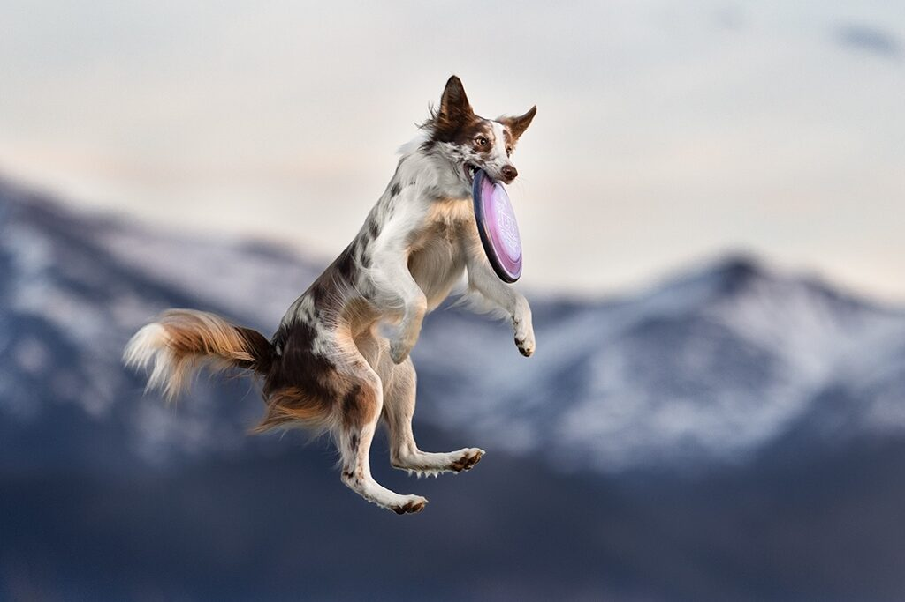
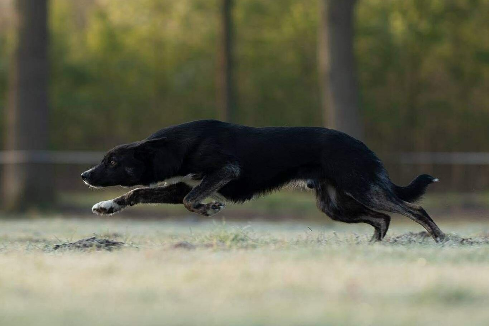
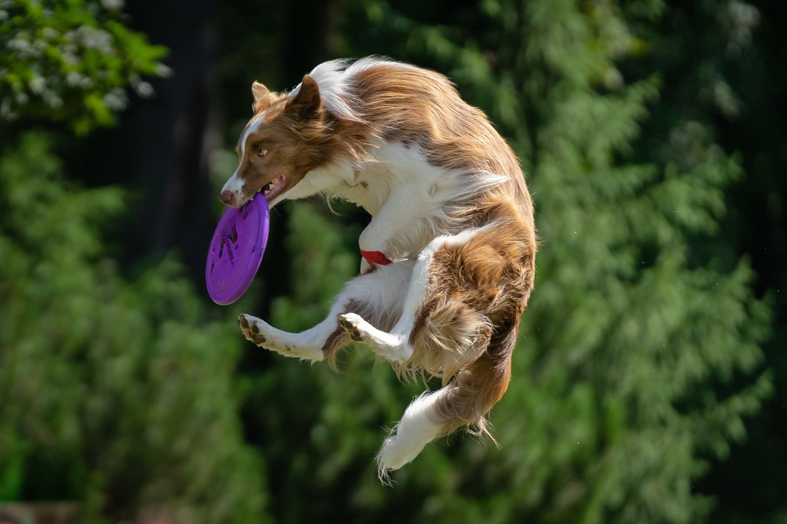
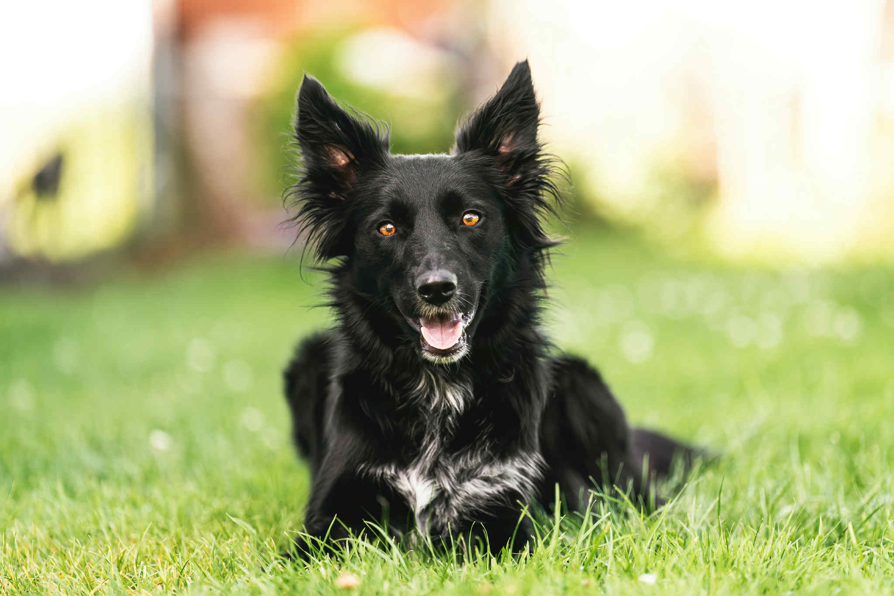
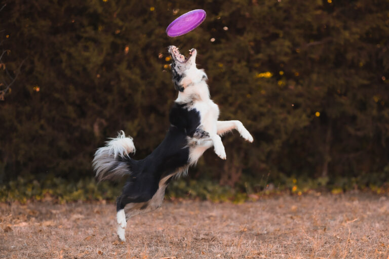
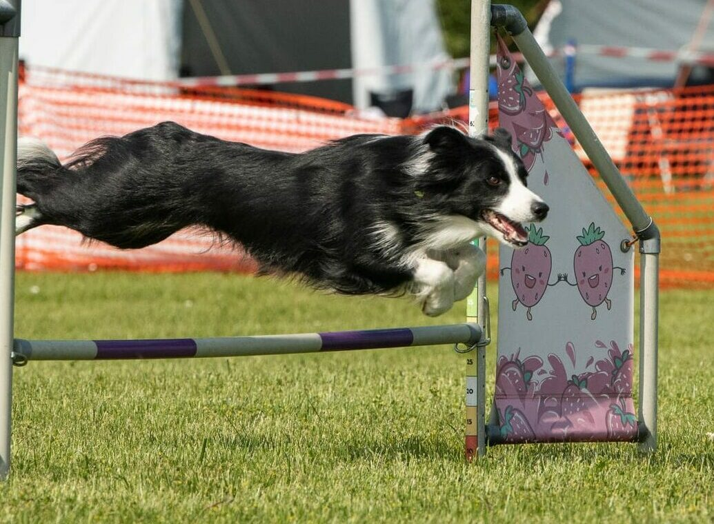
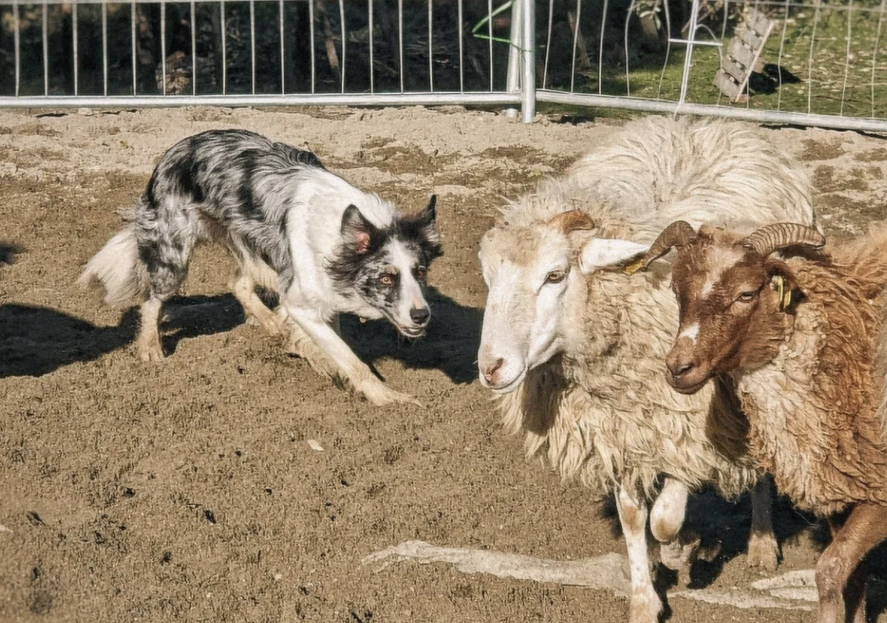
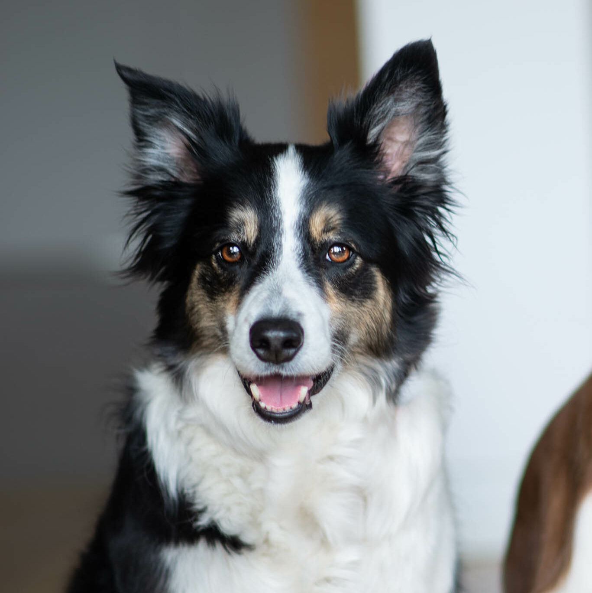

Litters
Our litters
Every litter is a chapter of our story.
Planned litters

Planned litter · winter 2026/27 · FCI & ISDS
Hauru & Cymru
First litter planned at Catching the Sky.

Previous litters

Jimmy's litter in an outside kennel
Born from Ember · FCI · Belgium
Jimmy & Ilvy
5 females and 2 males born on 4th March 2026.
Read more →
Jimmy's litter in an outside kennel
Storm of Caradhras · FCI · Spain
Jimmy & Bloom
1 female and 3 males born on 1st December 2024.
Read more →
Jimmy's litter in an outside kennel
Slavic Squad · FCI · Poland
Jimmy & Floey
1 female and 5 males born on 31st October 2024.
Read more →
Jimmy's litter in an outside kennel
Di Petrademone · FCI · Italy
Jimmy & Abbey
4 females and 2 males born on 20th April 2023 in Italy.
Our Hauru comes from this litter.

Jimmy's litter in an outside kennel
Zip Zap · FCI · Czech Republic
Jimmy & Aiky
2 females and 4 males born on 7th July 2021 in Czech Republic.
Read more →